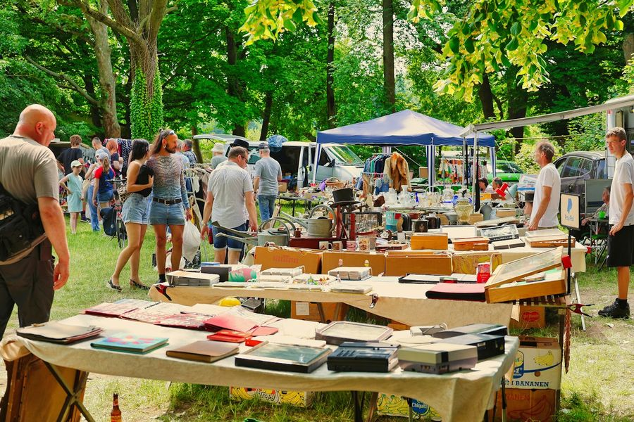
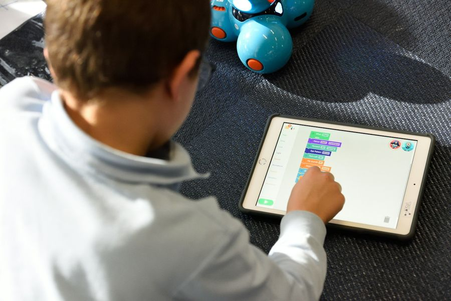

01
イベントの企画・運営
Event Planning人が集まる場を、企画から当日の運営まで自分たちで組み立てます。アウトドア用品を持ち寄って売り買いするフリーマーケット、楽器や歌を持ち寄って一緒に演奏する音楽セッション、年間シリーズで順位を競う大会。規模や形はさまざまですが、「自分たちが参加したいと思える場か」を軸に企画しています。
いずれも、これから形にしていく企画です。
人が集まる場を、自分たちで企画し、運営しています。アウトドア用品のフリーマーケット、ドローンの体験会、音楽セッション、小学生向けのプログラミング・モノづくり体験、そして年間シリーズで開催している釣りの大会。ジャンルにこだわらず、自分たちが楽しいと思えることを形にしていきます。
イベントの楽しさは、当日だけで決まりません。申し込み、受付、抽選、結果の発表、次回の案内。そのひとつひとつにITの仕組みを組み合わせることで、待ち時間を減らし、参加する人も運営する人も楽しめる場をつくっています。

人が集まる場を、企画から当日の運営まで自分たちで組み立てます。アウトドア用品を持ち寄って売り買いするフリーマーケット、楽器や歌を持ち寄って一緒に演奏する音楽セッション、年間シリーズで順位を競う大会。規模や形はさまざまですが、「自分たちが参加したいと思える場か」を軸に企画しています。
いずれも、これから形にしていく企画です。

見るだけでなく、手を動かして体験する場もつくっています。ドローンの操縦や空撮を気軽に試せる体験会。小学生がプログラミングやモノづくりに触れ、自分の手で動くものをつくるワークショップ。
ITの会社として日々使っている技術を、はじめて触れる人が楽しめる形に組み替えて届けます。

申し込み、QRコードでの受付、組み分けの自動抽選、その場で更新されるライブスコア、リマインドや中止連絡の自動配信。自分たちのイベントで必要になった仕組みを、自分たちでアプリにしてきました。
受付の列や集計の待ち時間をなくし、運営する人が参加者と向き合える時間を増やす。そのためのイベントアプリの制作にも取り組んでいます。
ＳＥＳ事業において御協業いただけるビジネスパートナー企業様を募集しております。